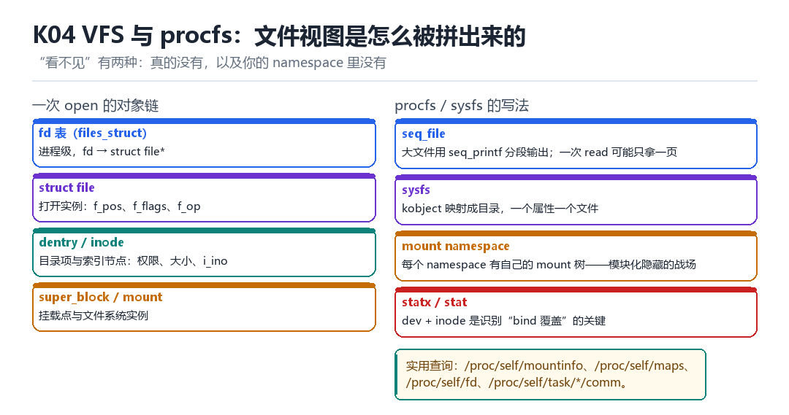

VFS、文件系统与 procfs
fd、file、inode、mount namespace、seq_file、sysfs
“看不见”有两种：真的没有，以及你的 namespace 里没有。
4.1 一次 open 的对象链

- fd 表（
files_struct）：进程级数组，fd →struct file*。 - struct file：一次打开实例，记录
f_pos、f_flags、f_op。 - dentry / inode：目录项与索引节点，权限、大小、
i_ino都在 inode 上。 - super_block / mount：文件系统实例与挂载点。
4.2 procfs 与 sysfs 的写法
| 接口 | 特点 | 注意 |
|---|---|---|
| seq_file | 大文件用 seq_printf 分段输出 | 一次 read 可能只拿一页 |
| sysfs | kobject 映射成目录，一属性一文件 | 写入要校验 |
| mount namespace | 每个 ns 有自己的 mount 树 | 隐藏的主战场 |
| statx | 返回 dev + inode + 更多属性 | 识别 bind 覆盖 |
4.3 为什么 mount namespace 是隐藏的战场
模块化方案替换系统文件，靠的是在目标进程的 namespace 里做 mount --bind。效果是：这个进程读文件看到新内容，别的进程看到旧的。
破绽在于“身份”：stat 返回的 st_dev 与 st_ino 还是被覆盖文件的，而内容却是模块的。内容与身份不符，就是最硬的证据。
cat /proc/self/mountinfo | grep -i bind
stat -c '%d %i %s %n' /system/app/Foo/Foo.apk
ls -l /proc/self/map_files/ | head4.4 本章自测
- fd、file、inode 三者的关系是什么？
- seq_file 为什么不能一次读完全部内容？
- mount 覆盖留下了哪两个可查的破绽？
- 如果只改 inode 里的内容不改 inode 号，能被发现吗？
4.5 深入：dentry cache 与路径解析
打开 /a/b/c 时，内核不会每次都从根目录逐级读磁盘——它先查 dentry cache（dcache）。命中就直接拿到 inode，未命中才走文件系统。这让路径解析非常快，也让“路径”变成了一种缓存视图。
| 对象 | 缓存 | 失效时机 |
|---|---|---|
| dentry | dcache | 文件被删除/重命名 |
| inode | inode cache | 引用计数归零 |
| page | page cache | 内存压力、显式 drop |
4.6 实战：为什么“删了文件但空间没释放”
因为还有进程持有这个文件的 fd。inode 的引用计数不为零，磁盘块就不会释放。lsof +L1 或遍历 /proc/*/fd 就能找到是谁占着。
ls -l /proc/*/fd 2>/dev/null | grep deleted
# 或者：
lsof +L1 2>/dev/null | head4.7 原理推演：为什么“路径”不是“身份”
路径只是“从某个根出发的一串名字”，而身份是 (dev, inode) 这个二元组。两者可以不一致——bind mount、overlayfs、甚至符号链接，都能让同一个路径指向不同身份的文件。
| 机制 | 路径 | 身份 |
|---|---|---|
| bind mount | 同一路径 | 可能不同 inode |
| overlayfs | 合并视图 | 上层优先 |
| hard link | 不同路径 | 同一 inode |
| symlink | 指向别处 | 解析后才是真身份 |
检测方因此更信任 (dev, inode)，而不是路径。但方向要注意：bind mount 之后，`stat` 返回的是“被 bind 过来的源文件”的 dev/ino（通常落在 /data 所在文件系统），而不是原厂镜像里那个文件的 dev/ino。所以破绽不是“inode 没变”，而是“inode 变了、路径却没变”——拿同路径的官方固件文件一比，dev/ino 与内容哈希都对不上；再加上 mountinfo 里多出的 bind 记录，三处一起构成证据。
4.8 数据细节：mountinfo 的一行
36 25 0:32 / /system rw,relatime shared:1 - ext4 /dev/block/dm-2 rw
│ │ │ │ │ │ │
│ │ │ │ │ │ └ 源与挂载选项
│ │ │ │ │ └ 文件系统类型
│ │ │ │ └ 挂载点
│ │ │ └ 根（子树）
│ │ └ 主:次 设备号
│ └ 父 mount id
└ mount id4.9 深入：为什么 seq_file 要“分段”
因为内核不能一次性分配“可能很大”的缓冲区。seq_file 的做法是：每次 read 只生成一页内容，下次从上次停的地方继续。这样内存占用固定，且支持任意大小的输出。
| 方式 | 内存占用 | 适用 |
|---|---|---|
| 一次性 buffer | 与输出同大 | 小文件 |
| seq_file | 一页 | 任意大小 |
副作用：如果你在“两次 read 之间”改变了数据源，输出可能不一致。这是 /proc 类接口的固有问题。
4.10 深入：/proc/self 是什么
它是一个“魔法符号链接”，指向“当前进程”的目录。所以 cat /proc/self/maps 与 cat /proc/<你的pid>/maps 等价。这个设计让“读自己的信息”变得非常方便。
/proc/self/maps # 内存映射
/proc/self/status # 进程状态（含 TracerPid）
/proc/self/fd # 打开的文件
/proc/self/task # 所有线程
/proc/self/mountinfo # 挂载树4.11 实战：判断“文件是否被 bind 覆盖”
stat -c '%d %i' /system/app/Foo/Foo.apk
# 与官方固件里的同一文件对比
# 不一致 = 被覆盖过一个长度为零的文件，读出了几千个字
在 adb shell 里敲一次 cat /proc/self/maps，几 KB 内容唰地铺满屏幕。可你要是顺手 stat 一下这个文件，会看见大小是 0。一个长度为零的文件，读出了几千个字——因为它压根不在磁盘上，也不是磁盘文件的投影。你刚才那次 read，是内核当场给你现写的一封信。
把 VFS 想成一层总机：不管下面接的是 ext4、tmpfs、procfs 还是 binder，上面一律只认 open、read、write。总机把一次 open 拆成一串对象，每个对象各管一段寿命；而 /proc 就是那个最会骗人的分机——它没有块设备，没有对应磁盘块的 inode，只有一组在 read 时才被调用的函数。
一次 open 拆成的五拍对象链
- 用户态 对 内核 递一个路径字符串和一组 flags → 结果：
openat拿到 dfd 与 pathname，开始filename_lookup。 - `pathwalk` 对 dentry 缓存 逐段走：斜杠、proc、self、文件名，逐级 hash 查找、必要时回调
lookup→ 结果：拿到目标dentry与它的inode；self在这里被解析成当前读者的 pid 目录。 - `alloc_file` 对 `files_struct` 造一次打开实例：新建
struct file，填好f_op、f_pos、f_flags，再从 fdtable 里挑一个最小空位 → 结果：进程手里多了一个整数 fd，指向这个 file。 - `vfs_read` 对 `f_op` 的 seq_file 回调 分派：procfs 节点调自己的
show，一次生成一页 → 结果：内核把当前进程的 VMA 现场写成文本，copy_to_user送回用户缓冲区。 - 第二次 `read` 对 `f_pos` 继续：seq_file 从上次停的位置接着生成下一页 → 结果：内容看起来是连续的，其实是两拨现算的数据拼起来的；中途数据变了，两页就对不上。
第 2 拍里 /proc/self 是个魔法符号链接：它不指向固定的 pid，而是在每次被解析时指向正在解析它的那个进程。所以两个进程同时 cat /proc/self/maps，拿到的是各自的映射表；同一个进程里 /proc/self/fd/N 与 /proc/<pid>/fd/N 也永远等价。这条性质是很多自查脚本的地基，也是很多我明明隐藏了却还能看见的根源——你隐藏的是别人的目录，不是读者自己的。
mount namespace 是怎么把内容偷换掉的
- `clone(CLONE_NEWNS)` 对 mount namespace 复制一份挂载树 → 结果：新 namespace 里挂什么、卸什么，外面完全看不见。
- `mount --bind` 对 某个路径 盖一层：把另一个文件或目录挂到目标 dentry 上 → 结果：这个 namespace 里读该路径拿到新内容，其它 namespace 仍读原件。
- `statx` 对 覆盖后的 inode 取身份：
st_dev、st_ino仍来自原来那套对象，或被 bind 源改写 → 结果：内容与身份出现一处可比对的不一致。 - `/proc/self/mountinfo` 对 挂载树 如实汇报：每条记录带 mount id、parent id、设备号、root、挂载点与可选标签 → 结果：只要没主动过滤，bind 记录会原样躺在里面。
- 检测方 对 `map_files` 与 fd 反查：内存映射区间对应的真实来源链接 → 结果：一段声称来自系统 so 的映射，若链接指向别处，隐藏就穿了。
| 观察面 | 读到什么 | 正常应看到 | 异常意味着 |
|---|---|---|---|
| /proc/self/mountinfo | 本 namespace 的全部挂载记录 | 系统分区只读、无多余 bind | 出现指向 /data 的 bind 覆盖 |
| stat 的 dev 与 ino | 文件的设备号与 inode 号 | 与官方固件里同一路径一致 | 内容换了但身份没换，或反之 |
| st_size（procfs） | 文件大小 | 多数 /proc 文件恒为 0 | 为零却读出内容属正常，别拿它判空 |
| /proc/self/fd/ | 进程打开的文件链接 | 与 maps、lsof 能对齐 | 多出匿名 fd 或指向可疑路径 |
| /proc/self/map_files/ | 每段映射对应的真实文件 | 链接目标与 maps 里的路径一致 | 链接被删或指向 tmpfs 里的替身 |
| ls -Z | 文件安全上下文 | 系统文件带 system_file 类型 | 类型与内容不匹配（接 K08） |
三句话验证你读的是不是真的那个文件
# 1. 尺寸与内容的悖论：先证明 procfs 是现算的
stat -c '%s %n' /proc/self/maps && wc -c < /proc/self/maps
# 成功：stat 给 0，wc 给几千 => 内容来自 read 回调，不是磁盘块
# 失败：stat 非 0 => 你看的不是 procfs，检查是否被 bind 成了普通文件
# 2. 身份比对：dev 加 inode 加大小
stat -c '%d %i %s %n' /system/lib64/libexample.so
# 成功：与固件里同一路径的 dev 与 ino 一致 => 没被换
# 失败：内容变了但 dev 与 ino 没变 => 覆盖者只改了内容；两者都变 => 换成了替身文件
# 3. 挂载树与 fd 一起看
grep -i bind /proc/self/mountinfo | head -20
ls -l /proc/self/fd/ | head -20
readlink /proc/self/fd/0
# 成功：mountinfo 无多余 bind，fd 链接与预期一致
# 失败：出现指向 /data/local/tmp 的 bind，或 fd 指向 deleted 文件 => 有替换痕迹
# 4. 映射来源反查（需 root 或 ptrace 权限）
ls -l /proc/self/map_files/ | head -10
# 成功：每段链接目标与 maps 里的路径一一对应
# 失败：出现 deleted 或链接落到匿名 tmpfs => 有人在运行时换了文件四条命令要一起看才有意义：单看 stat 只能证明身份没变，单看 mountinfo 只能证明当前 namespace 干净。真正的证据是身份、内容、挂载树三者之间出现不能同时成立的关系。这也是 seq_file 分段读的副作用：如果数据源在两次 read 之间被换掉，前半页和后半页会自相矛盾——那种不一致本身就是线索。
把这条结论带走：隐藏一个文件，改的是某个 namespace 里的一次路径解析，不是改文件本身。第四部 M02 把 /proc、/sys 当成内核观察面逐项收口时，用的就是这里这张表；第三部 F09 自定义 linker 要绕开 map_files 与 fd 的交叉校验，靠的也是对这条对象链的理解；第五部 L06 把 Binder、FD、linker 三本账一起收口，本质上就是在回答谁打开过什么、现在还指不指向它。